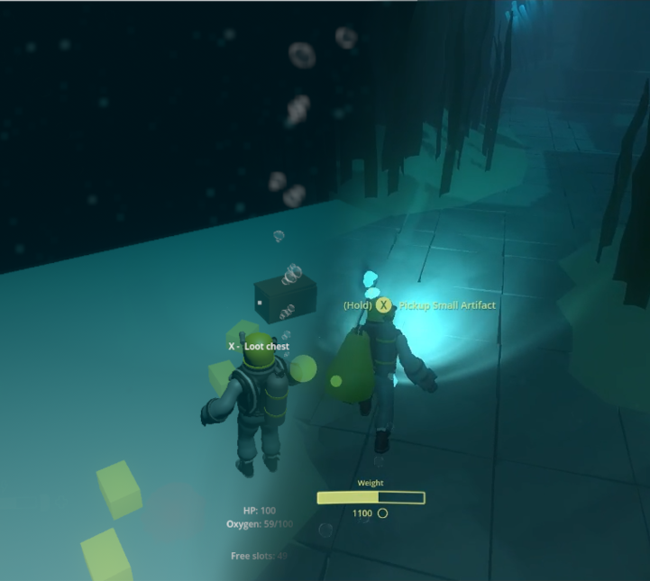
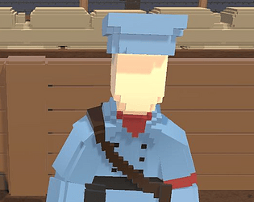
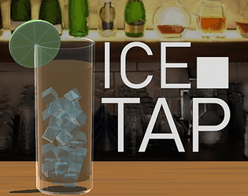
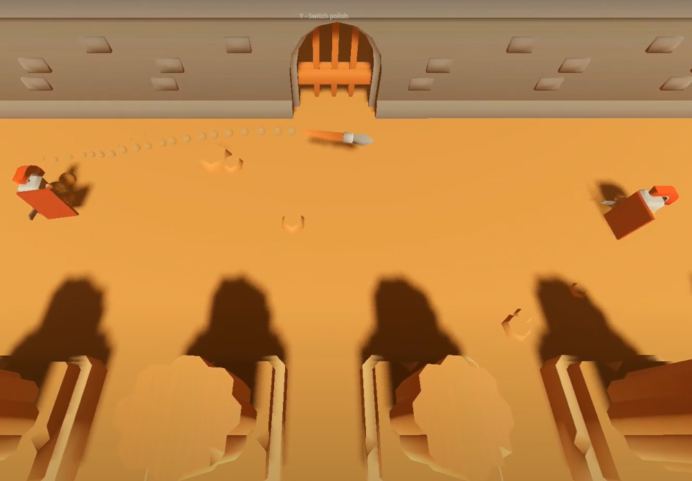
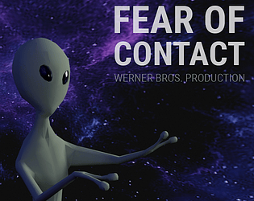
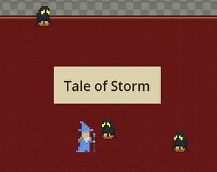

Looting
Work experience
Dead Rift - Polysoup Interactive
Gameplay design and scripting (2025/6 - 2025/8)
Technology: Godot, C#
I have joined Polysoup Interactive thanks to Sammes Stiftelse summer scholarship to help with prototyping of their new game Dead Rift. Dead Rift is a co-op loot extraction game set inside an ancient structure buried deep under the sea. Our goal was to make a playable prototype, starting from functional player character and vertical slice. Over summer we have managed to bring many features and tried out several gameplay variations. This process taught me how to iterate fast in a small team and discover fun elements of the game.
Contributions
- Game flow and systems: Session management, game loading, Menu base
- Mechanical objects: Moving obstacles, System of triggers and reactors
- Player additions: Oxygen, Inventory, Interactions
- Enemies: Turret, Blowfish, Beetle crow behavior
- Simple shop and upgrading system
- Player HUD


3 months progress

Combat
Arma Reforger - Bohemia Interactive
Technical designer - Scripting and design (2020/8 - 2024/8)
Technology: Enfusion Engine, Enforce Script
Working on Arma Reforger was my first serious job in the game industry. I have started while the game was in production and I have experienced it’s rise towards early access, full release and later on gaining popularity with incoming updates. I have been involved mostly with UI script and front-end scripting of tools related to multiplayer and modding like server browser and workshop. Thanks to me and my colleagues we were able to create tools for convenient mods consumption, which is more accessible than modding in previous titles, and is available across multiple major platforms. Besides maturing as a true developer I have gained better understanding and appreciation for the modding and modding community, which is an important part of the Arma franchise.
Timeline
2020
- 2D optics scripting used at vehicles and as alternative to PIP optics for better performance
- Scripted radial menu used for gamepad controls
2021
- Server browser scripting - Allows searching servers and automatic download of required server mods
- Widget library and UI scripting
2022 (EA release)
- Workshop advanced mod manager scripting - Allows easier handling of owned mods
- Improving and maintaining server browser and workshop towards and after EA release
- Scripted LAN hosting menu
2023 (1.0 release)
- Download manager improvement of UX and stability
- Selection menu refactor for better modularity across team and modder community
- Overtaking responsibility over Game Master editor
2024
- Game Master saves extension - Allows players share their saves over workshop
- Game Master maintenance
Personal projects

The Runner
December 2018
Technology: Unity, C#
Solo project
In the trenches of the Great War, the player is trying to survive and deliver messages between outposts.

Ice tap
December 2020
Technology: Unity, C#
Solo project
Mobile game playing around with ice juggling and breaking mechanics.
University projects

Pong - Metaphor excercise
March 2025
Technology: Godot, C#
Solo project
Fun exercise with the goal to turn Pong into a new game without changing mechanics. Used models comes from Kenney.
Game jams

Fear of Contact
November 2021 (GDS Prague jam)
Technology: Unity, C#
Contribution: Scripting
Horror obstacle runner where the player meets unknown intelligence.

Tale of Storm
June 2024 (Trijam #273)
Technology: Godot, GDScript
Contribution: Scripting, graphics
Vampire Survivors inspired where the player fights against waves of power demons.